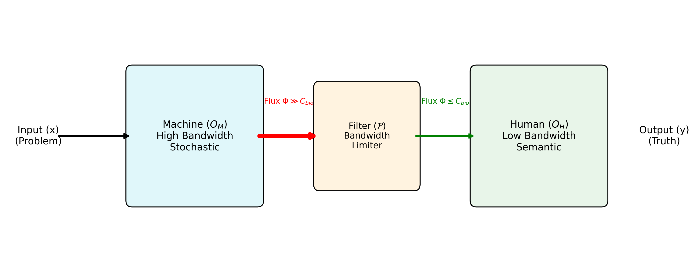
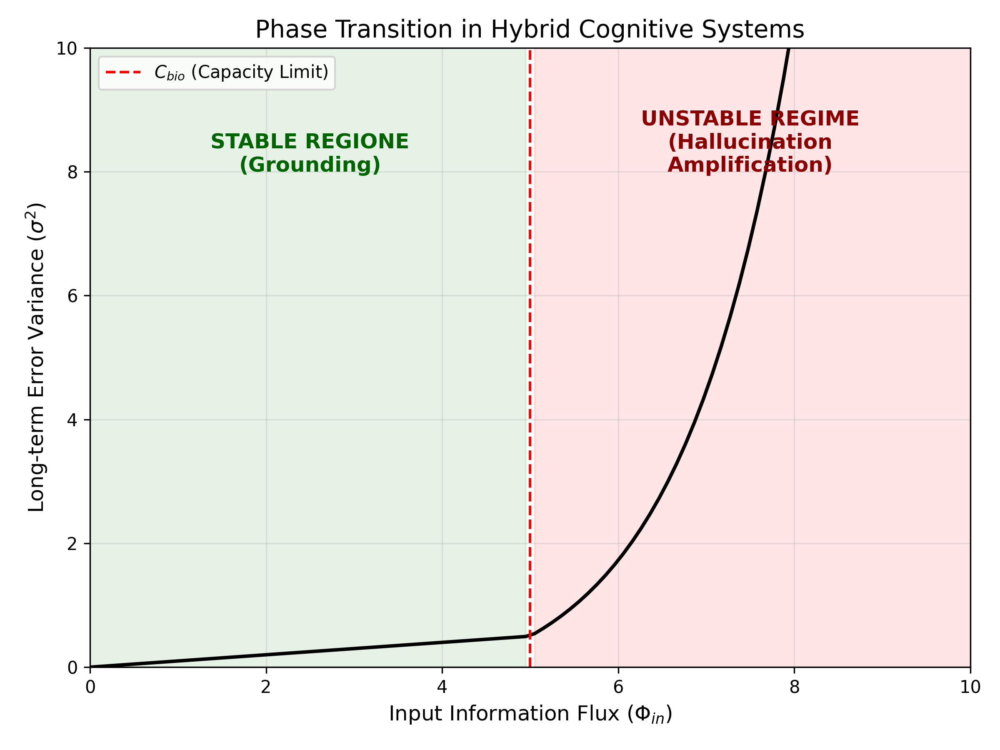

A Control-Theoretic Approach to AI Alignment
Douglas H. M. Fulber
Universidade Federal do Rio de Janeiro
Institute for Hybrid Cybernetics
Abstract
We present a formal framework for analyzing the stability of coupled inference systems composed of heterogeneous operators: stochastic high-bandwidth generators (e.g., Large Language Models) and deterministic low-bandwidth verifiers (e.g., Human Experts). We prove that in an environment of supercritical information flux ($ I_{env} \gg C_{human} $), the unshielded coupling of these operators leads to inevitable thermodynamic instability (error divergence). We derive the Hybrid Stability Theorem, which establishes the necessary bandwidth constraints for the filter function $\mathcal{F}$ to maintain the system's global entropy production below the recurrence threshold. This framework reframes "AI Hallucination" not as a model defect, but as a channel capacity mismatch, solvable via control theory.
1. Introduction: The Saturation Crisis
The proliferation of Generative AI has reduced the energetic cost of information production to near zero ($E_{gen} \to 0$). Conversely, the biological capacity for information verification ($C_{human}$) remains constant and energetically expensive ($E_{ver} \gg 0$).
This creates a Thermodynamic Asymmetry:
$$ \frac{dI_{gen}}{dt} \gg \frac{dI_{ver}}{dt} $$
Classical Cybernetics (Wiener) assumes the regulator has sufficient variety to match the system. In the current regime, the "regulator" (Human) has lower variety than the "disturbance" (AI Output). This paper investigates the physical conditions required to prevent system collapse under these boundary conditions.
2. Formal Model
We define the system $\Psi$ as a composite of two operators:
2.1 The Machine Operator ($\mathcal{M}$)
A stochastic map $\mathcal{M}: X \to \hat{Y}$ characterized by:
- High Bandwidth: $R_M \to \infty$ bits/s.
- Intrinsic Variance: $\sigma^2_M > 0$ (Probabilistic generation).
- Thermodynamic Class: Dissipative Structure (Exports entropy to the user).
2.2 The Human Operator ($\mathcal{H}$)
A semantic map $\mathcal{H}: \hat{Y} \to Y_{truth}$ characterized by:
- Capacity Limit: $R_H \le C_{bio} \in [10^1, 10^2]$ bits/s (Attention bottleneck).
- Grounding Capability: $\lim_{t \to \infty} \sigma^2_H \to 0$ (Convergence to ground truth).
2.3 The Coupling ($\Psi = \mathcal{H} \circ \mathcal{F} \circ \mathcal{M}$)
The total system output is the human selection from the machine's filtered generation. The stability of $\Psi$ depends entirely on the Filter Function $\mathcal{F}$.

Fig 1. The Hybrid Control Loop. The Filter $\mathcal{F}$ acts as a thermodynamic valve, reducing the supercritical flux of the Machine to match the biological capacity of the Human.
3. The Hybrid Stability Theorem
Proposition: A hybrid system is stable (bounded error variance) if and only if the periodic entropy reduction by $\mathcal{H}$ exceeds the entropy production of $\mathcal{M}$.
Theorem 1: Stability requires that the input flux to $\mathcal{H}$ satisfies:
$$ \Phi_{in}(\mathcal{H}) = \mathcal{F}(\Phi_{out}(\mathcal{M})) \le C_{bio} $$
Proof (Sketch):
If $\Phi_{in} > C_{bio}$, the Human Operator enters the Saturation Regime. In this regime, the verification function $V(y)$ degrades to a random guess function $G(y)$, with variance $\sigma^2_G \gg 0$.
The total system variance becomes:
$$ \sigma^2_{total} = \sigma^2_M + \sigma^2_G $$
Since both terms are positive, error accumulates monotonically. The system diverges.
Conversely, if $\Phi_{in} \le C_{bio}$, $\mathcal{H}$ operates in the Grounding Regime. It acts as an Entropy-Selective Verifier (structurally analogous to a Maxwell's Demon), selectively rejecting high-entropy outputs from $\mathcal{M}$. $\blacksquare$

Fig 2. Phase Transition in Hybrid Systems. Error variance remains bounded (Stable) only when input flux is below the biological capacity threshold $C_{bio}$. Above this, the system enters a thermal runaway loop.
4. Discussion: The "Human Block" as a Feature
Technological acceleration often views the human as the "bottleneck" to be removed. Our analysis suggests the opposite: The bottleneck is the stabilizing feature.
Removing the bandwidth constraint (e.g., directly coupling two LLMs in a loop) creates a Hallucination Cyclotron, where errors are amplified rather than corrected.
5. Conclusion
We conclude that the "Alignment Problem" is a subset of the "Bandwidth Matching Problem". Safe AI is not just about training objective functions, but about designing interfaces ($\mathcal{F}$) that respect the physical processing limits of the biological verifier.
References
- Shannon, C. E. (1948). A Mathematical Theory of Communication.
- Ashby, W. R. (1956). An Introduction to Cybernetics.
- Brillouin, L. (1956). Science and Information Theory.